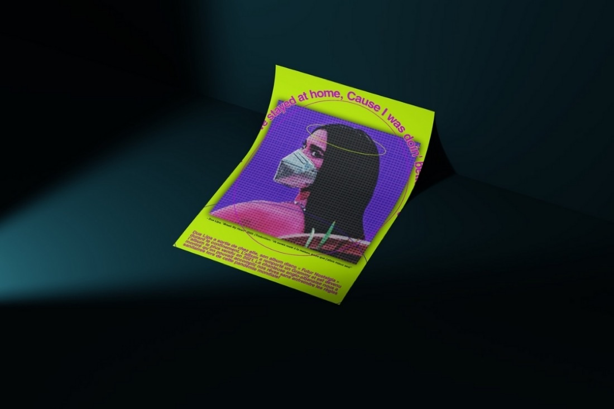
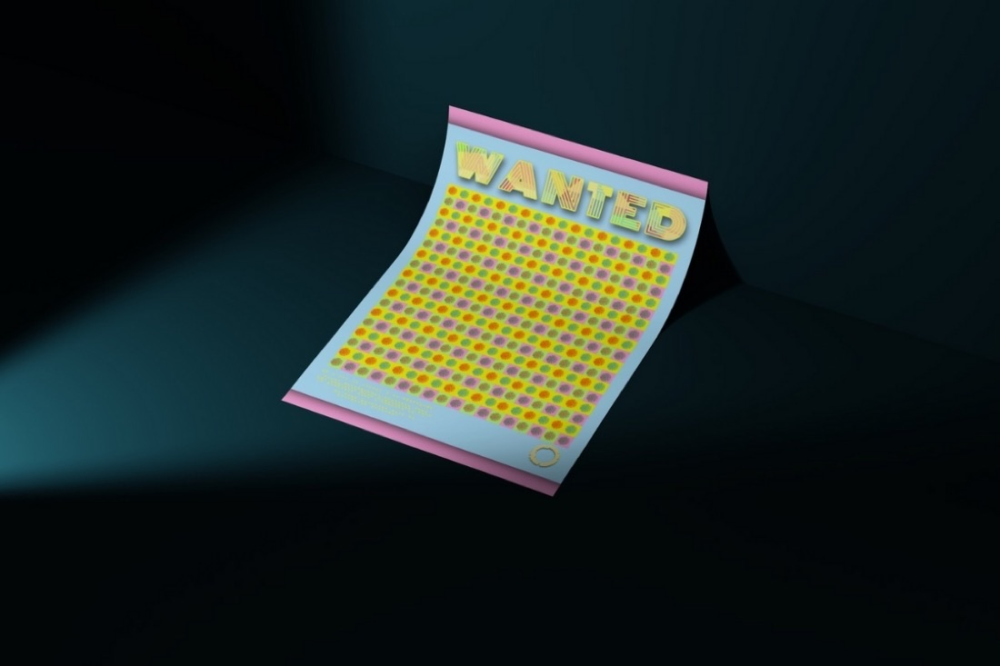
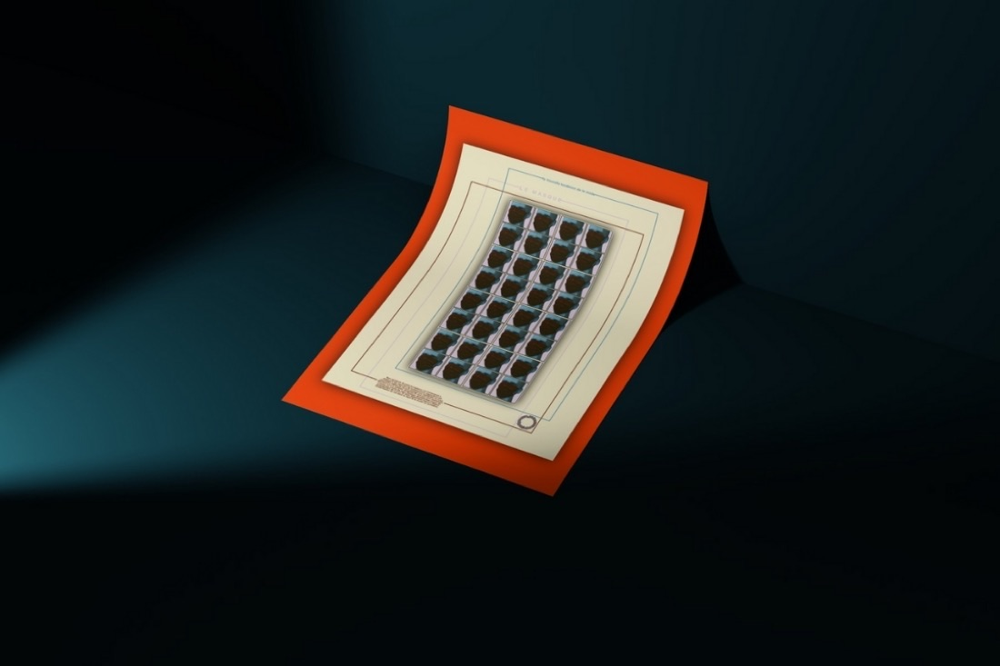

Anis Slimani
Inter-disciplinary Creative



Mass-Education merges Pop Art aesthetics with Cold War-era propaganda techniques to promote public health during the COVID-19 pandemic. Through bold visuals inspired by Warhol and Lichtenstein, it delivers direct messages about mask-wearing and safety.
Built with Adobe Illustrator, After Effects, and Premiere Pro, it recontextualises historical propaganda as modern health advocacy, and shows the enduring power of visual storytelling to shape behaviour during a crisis.
Mass-Education merges Pop Art aesthetics with Cold War-era propaganda techniques to promote public health during the COVID-19 pandemic. Through bold visuals inspired by Warhol and Lichtenstein, it delivers direct messages about mask-wearing and safety.
Built with Adobe Illustrator, After Effects, and Premiere Pro, it recontextualises historical propaganda as modern health advocacy, and shows the enduring power of visual storytelling to shape behaviour during a crisis.